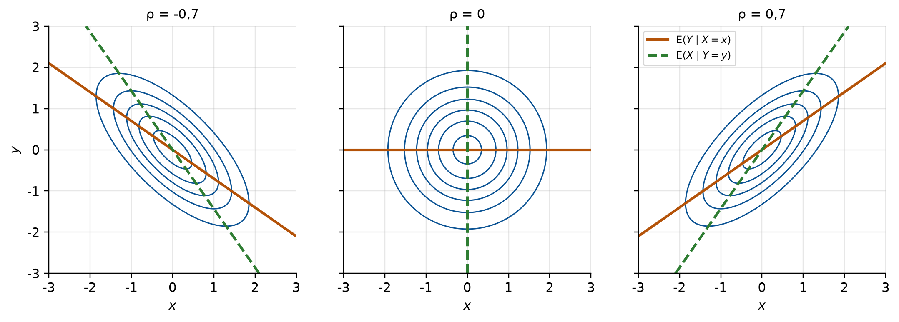
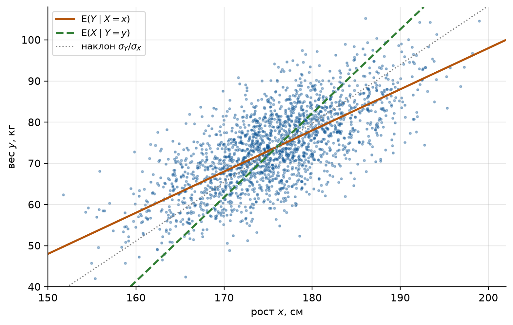
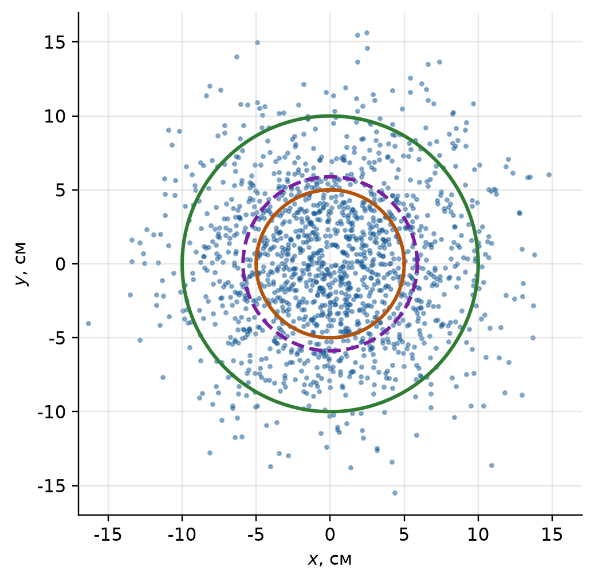
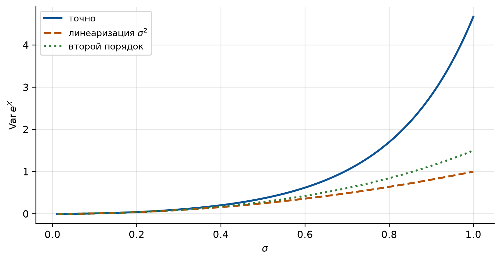

import numpy as np
import matplotlib.pyplot as plt
import sympy as sp
from math import erf, exp, log, pi, sqrt
# Оформление графиков: шрифт с кириллицей и палитра, различимая при печати
PALETTE = ["#0b5394", "#b45309", "#2e7d32", "#7b1fa2", "#c62828", "#00838f"]
plt.rcParams.update({
"font.family": "sans-serif",
"font.sans-serif": ["DejaVu Sans", "Liberation Sans", "Noto Sans", "sans-serif"],
"axes.unicode_minus": False,
"axes.prop_cycle": plt.cycler(color=PALETTE),
"axes.spines.top": False,
"axes.spines.right": False,
"axes.grid": True,
"grid.alpha": 0.3,
"figure.dpi": 110,
"figure.constrained_layout.use": True,
})
# Генератор случайных чисел с фиксированным зерном: результаты воспроизводимы
rng = np.random.default_rng(2026)
# Символьные переменные для выкладок
x, y = sp.symbols("x y", real=True)
def norm_cdf(t):
"""Функция распределения стандартного нормального закона, Phi(t) = P(Z < t)."""
return 0.5 * (1 + erf(t / sqrt(2)))
def normal2_pdf(xs, ys, mu_x, mu_y, s_x, s_y, r):
"""Плотность нормального закона на плоскости с параметрами mu_x, mu_y, s_x, s_y, r."""
u, v = (xs - mu_x) / s_x, (ys - mu_y) / s_y
q = (u**2 - 2 * r * u * v + v**2) / (1 - r**2)
return np.exp(-q / 2) / (2 * np.pi * s_x * s_y * np.sqrt(1 - r**2))
def sample_normal2(n, mu_x, mu_y, s_x, s_y, r):
"""n пар (X, Y) с нормальным законом на плоскости.
X = mu_x + s_x Z1, Y = mu_y + s_y (r Z1 + sqrt(1 - r^2) Z2), Z1, Z2 независимы, N(0, 1).
"""
z1, z2 = rng.standard_normal(n), rng.standard_normal(n)
return mu_x + s_x * z1, mu_y + s_y * (r * z1 + np.sqrt(1 - r**2) * z2)
def regression(x0, mu_x, mu_y, s_x, s_y, r):
"""Условный закон Y при X = x0: среднее (линия регрессии) и стандартное отклонение."""
return mu_y + r * s_y / s_x * (x0 - mu_x), s_y * np.sqrt(1 - r**2)
def linearized_var(grad, cov):
"""Дисперсия по линеаризации: grad^T Sigma grad.
grad: частные производные функции в точке средних; cov: ковариационная матрица.
"""
grad = np.asarray(grad, dtype=float)
return float(grad @ np.asarray(cov, dtype=float) @ grad)
def compare(name, a, b, labels=("точно", "симуляция")):
"""Печатает два значения одной величины рядом, с подписями labels."""
print(f"{name:>14}: {labels[0]} {a:10.5f} {labels[1]} {b:10.5f}")6 Семинар 7. Нормальный закон на плоскости. Функции случайных величин
Теория вероятностей и математическая статистика · НИЯУ МИФИ
Скачать PDF-раздатку этого семинара
6.1 Код для этой главы
Все импорты и функции, которые используются в примерах главы, собраны в одной ячейке. Выполните её первой. Остальные ячейки опираются на неё.
6.2 Краткая сводка
Семинар продолжает тему систем двух величин (семинар 5) и закрывает лекцию 9. Две темы:
- нормальный закон на плоскости: самый важный совместный закон. Рост и вес, две координаты точки попадания, ошибки двух приборов чаще всего описывают именно им;
- числовые характеристики функций случайных величин: как найти среднее и разброс величины, вычисленной по измеренным (площадь по сторонам, ускорение по длине и периоду маятника), не находя её закона.
Уведомление
Обозначения. В главе используются стандартные обозначения. У лектора и в задачнике то же самое записано иначе:
| Здесь | Лекция | Гмурман |
|---|---|---|
| \(\mu_X = \E X\), \(\sigma_X\), \(\rho\) | \(m_x\), \(\sigma_x\), \(r_{xy}\) | \(a\), \(\sigma\), \(r_{xy}\) |
| \(X \sim N(\mu, \sigma^2)\) | \(N(m, \sigma)\) | «нормальна с параметрами \(a\), \(\sigma\)» |
| \(f_{Y\mid X}(y \mid x)\) | \(f(y/x)\) | \(\psi(y \mid x)\) |
| \(\E(Y \mid X = x)\), \(\sigma(Y \mid X = x)\) | \(m_{y/x}\), \(\sigma_{y/x}\) | |
| \(\E g(X)\), \(\Var g(X)\) | \(M[\varphi(X)]\), \(D[\varphi(X)]\) | \(M[\varphi(X)]\), \(D[\varphi(X)]\) |
| \(\Sigma\) | \(\hat K\) | |
| \(\Phi(t) = \Prob(Z < t)\), \(Z \sim N(0, 1)\) | \(\Phi(t) - 0{,}5\) |
Функция \(\Phi\). Здесь \(\Phi\) есть функция распределения стандартного нормального закона: \(\Phi(0) = 0{,}5\), \(\Phi(-t) = 1 - \Phi(t)\). Функция Лапласа из задачника (и из семинара 3) берёт интеграл от нуля и меньше на \(0{,}5\). Для \(X \sim N(\mu, \sigma^2)\) \[ \Prob(\alpha < X < \beta) = \Phi\Big(\frac{\beta - \mu}{\sigma}\Big) - \Phi\Big(\frac{\alpha - \mu}{\sigma}\Big), \qquad \Prob(|X - \mu| < k\sigma) = 2\Phi(k) - 1. \]
6.2.1 Нормальный закон на плоскости
Пара \((X, Y)\) распределена по нормальному закону на плоскости (двумерному нормальному), если её плотность \[ f(x, y) = \frac{1}{2\pi\sigma_X\sigma_Y\sqrt{1 - \rho^2}} \exp\left\{-\frac{1}{2(1 - \rho^2)}\left[\frac{(x - \mu_X)^2}{\sigma_X^2} - 2\rho\,\frac{(x - \mu_X)(y - \mu_Y)}{\sigma_X\sigma_Y} + \frac{(y - \mu_Y)^2}{\sigma_Y^2}\right]\right\}. \tag{6.1}\] Пять параметров имеют прямой смысл: \(\mu_X = \E X\), \(\mu_Y = \E Y\), \(\sigma_X\) и \(\sigma_Y\) есть стандартные отклонения составляющих, \(\rho = \rho(X, Y)\), \(|\rho| < 1\). Закон целиком задаётся средними, дисперсиями и ковариацией.
В матричной записи, с \(\mathbf z = (x, y)^{\mathsf T}\), вектором средних \(\boldsymbol\mu = (\mu_X, \mu_Y)^{\mathsf T}\) и ковариационной матрицей \[ \Sigma = \begin{pmatrix} \sigma_X^2 & \rho\sigma_X\sigma_Y \\ \rho\sigma_X\sigma_Y & \sigma_Y^2 \end{pmatrix}, \qquad f(\mathbf z) = \frac{1}{2\pi\sqrt{\det\Sigma}} \exp\Big\{-\tfrac12(\mathbf z - \boldsymbol\mu)^{\mathsf T}\Sigma^{-1}(\mathbf z - \boldsymbol\mu)\Big\}. \tag{6.2}\] Коротко пишут \((X, Y) \sim N(\boldsymbol\mu, \Sigma)\). Матричная форма удобна, когда плотность дана «в готовом виде» и параметры надо узнать (задача 1): квадратичная форма в показателе есть \(\Sigma^{-1}\).
Свойства.
- Составляющие нормальны: \(X \sim N(\mu_X, \sigma_X^2)\), \(Y \sim N(\mu_Y, \sigma_Y^2)\). Обратное неверно: две нормальные величины не обязаны образовывать нормальный закон на плоскости (задача 3).
- Некоррелированность равносильна независимости. При \(\rho = 0\) перекрёстное слагаемое в Уравнение 6.1 исчезает, и плотность распадается в произведение \(f_X(x)f_Y(y)\). Для произвольных величин из \(\rho = 0\) независимость не следует (семинар 5); для нормального закона на плоскости следует.
- Условные законы нормальны: \[ Y \mid X = x \ \sim\ N\Big(\mu_Y + \rho\frac{\sigma_Y}{\sigma_X}(x - \mu_X),\ \ \sigma_Y^2(1 - \rho^2)\Big). \tag{6.3}\] Линия регрессии \(\E(Y \mid X = x) = \mu_Y + \rho\frac{\sigma_Y}{\sigma_X}(x - \mu_X)\) прямая, а условная дисперсия \(\sigma_Y^2(1 - \rho^2)\) от \(x\) не зависит. Знание \(X\) уменьшает дисперсию \(Y\) в \(1/(1 - \rho^2)\) раз: доля \(\rho^2\) разброса \(Y\) объясняется значением \(X\).
- Две линии регрессии. По симметрии \(\E(X \mid Y = y) = \mu_X + \rho\frac{\sigma_X}{\sigma_Y}(y - \mu_Y)\). Обе прямые проходят через центр \((\mu_X, \mu_Y)\), но это разные прямые: вторая не получается обращением первой. Совпадают они только при \(|\rho| = 1\) (задача 2).
- Линии равной плотности есть эллипсы (эллипсы рассеивания) с центром \((\mu_X, \mu_Y)\): на них показатель в Уравнение 6.1 постоянен. При \(\rho = 0\) оси эллипсов параллельны осям координат, при \(\rho = 0\) и \(\sigma_X = \sigma_Y\) эллипсы становятся окружностями (задача 4).
grid = np.linspace(-3, 3, 241)
gx, gy = np.meshgrid(grid, grid)
fig, axes = plt.subplots(1, 3, figsize=(10, 3.4), sharex=True, sharey=True)
for ax, r in zip(axes, [-0.7, 0.0, 0.7]):
ax.contour(gx, gy, normal2_pdf(gx, gy, 0, 0, 1, 1, r), levels=6, colors=PALETTE[0], linewidths=1)
ax.plot(grid, r * grid, color=PALETTE[1], lw=2, label="$\\mathrm{E}(Y\\mid X=x)$")
if r != 0:
ax.plot(r * grid, grid, color=PALETTE[2], lw=2, ls="--", label="$\\mathrm{E}(X\\mid Y=y)$")
else:
ax.axvline(0, color=PALETTE[2], lw=2, ls="--")
ax.set_title(f"ρ = {r:g}".replace(".", ","), fontsize=10)
ax.set_xlim(-3, 3)
ax.set_ylim(-3, 3)
ax.set_aspect("equal")
ax.set_xlabel("$x$")
axes[0].set_ylabel("$y$")
axes[2].legend(fontsize=8, loc="upper left")
plt.show()
6.2.2 Числовые характеристики функций
Пусть \(Y = g(X)\). Чтобы найти \(\E Y\) и \(\Var Y\), закон \(Y\) искать не нужно: достаточно закона аргумента. \[ \E g(X) = \sum_i g(x_i)\,p_i, \qquad \E g(X) = \int_{-\infty}^{\infty} g(x)\,f(x)\,dx, \tag{6.4}\] \[ \Var g(X) = \E\big[g(X)^2\big] - \big(\E g(X)\big)^2. \tag{6.5}\] Для функции двух аргументов так же, по совместному закону: \(\E g(X, Y) = \iint g(x, y)\,f(x, y)\,dx\,dy\) (семинар 5).
Для линейной функции хватает средних, дисперсий и ковариаций аргументов (свойства из семинара 5): \(\E(aX + bY + c) = a\E X + b\E Y + c\), \(\Var(aX + bY + c) = a^2\Var X + b^2\Var Y + 2ab\Cov(X, Y)\). Для произведения \(\E(XY) = \E X\,\E Y + \Cov(X, Y)\), а для независимых \(X\) и \(Y\) \[ \Var(XY) = \Var X\,\Var Y + (\E X)^2\Var Y + (\E Y)^2\Var X. \tag{6.6}\]
Важное уведомление
\(\E g(X) \ne g(\E X)\), если \(g\) не линейна. Средний квадрат не равен квадрату среднего (их разность есть дисперсия), среднее время в пути не равно пути, делённому на среднюю скорость (задача 5). Для выпуклой вниз функции \(g\) (как \(x^2\), \(1/x\) при \(x > 0\), \(e^x\)) всегда \(\E g(X) \geqslant g(\E X)\): это неравенство Йенсена.
6.2.3 Линеаризация
Часто \(g\) сложна, а закон \(X\) известен не полностью: известны только среднее \(\mu\) и дисперсия (так обычно задают погрешность измерения). Если \(X\) мало отклоняется от \(\mu\), функцию заменяют касательной, \(g(X) \approx g(\mu) + g'(\mu)(X - \mu)\), и получают \[ \E g(X) \approx g(\mu), \qquad \Var g(X) \approx g'(\mu)^2\,\Var X. \tag{6.7}\] Для функции нескольких аргументов \(\mathbf X = (X_1, \dots, X_n)\) со средними \(\boldsymbol\mu\) и ковариационной матрицей \(\Sigma\) так же (производные берутся в точке \(\boldsymbol\mu\)): \[ \Var g(\mathbf X) \approx \sum_i \Big(\frac{\partial g}{\partial x_i}\Big)^2\Var X_i + 2\sum_{i<j}\frac{\partial g}{\partial x_i}\frac{\partial g}{\partial x_j}\Cov(X_i, X_j) = \nabla g^{\mathsf T}\,\Sigma\,\nabla g. \tag{6.8}\] Важный частный случай: \(g = c\,x_1^{k_1}\cdots x_n^{k_n}\) при независимых аргументах. Тогда \(\partial g/\partial x_i = k_i g/x_i\), и относительные погрешности \(\delta = \sigma/\mu\) складываются квадратами с весами-показателями: \[ \delta_g^2 \approx \sum_i k_i^2\,\delta_i^2. \tag{6.9}\]
Поправка второго порядка. Если удержать в формуле Тейлора ещё слагаемое \(\tfrac12 g''(\mu)(X - \mu)^2\), то \[ \E g(X) \approx g(\mu) + \tfrac12 g''(\mu)\Var X, \qquad \Var g(X) \approx g'(\mu)^2\Var X + \tfrac12 g''(\mu)^2(\Var X)^2 \quad (X \text{ нормальна}). \tag{6.10}\] Вторая формула использует моменты нормального закона: \(\E(X - \mu)^3 = 0\), \(\E(X - \mu)^4 = 3\sigma^4\). Поправка показывает, когда линеаризации можно верить: пока \(\tfrac12|g''|\sigma^2\) мало по сравнению с \(|g'|\sigma\), то есть пока на масштабе \(\sigma\) функция почти не изгибается (задача 11).
6.3 Блок A. Нормальный закон на плоскости
6.3.1 Задача 1
Плотность пары \((X, Y)\) имеет вид \[ f(x, y) = C\exp\Big\{-(x - 1)^2 + (x - 1)(y + 2) - \tfrac12(y + 2)^2\Big\}. \] а) Найти \(C\) и плотность составляющей \(X\). б) Найти условный закон \(Y\) при \(X = x\) и линию регрессии \(Y\) на \(X\). в) Найти \(\mu_X\), \(\mu_Y\), \(\sigma_X\), \(\sigma_Y\), \(\rho\). Независимы ли \(X\) и \(Y\)?
СоветРешение
Обозначим \(u = x - 1\), \(v = y + 2\). В показателе стоит \(-(u^2 - uv + \tfrac12 v^2)\). Выделим полный квадрат по \(v\): \[ u^2 - uv + \tfrac12 v^2 = \tfrac12(v - u)^2 + \tfrac12 u^2, \qquad f(x, y) = C\,e^{-u^2/2}\,e^{-(v - u)^2/2}. \]
а) Интеграл по \(y\) (то есть по \(v\)) от \(e^{-(v - u)^2/2}\) равен \(\sqrt{2\pi}\) при любом \(u\), интеграл по \(u\) от \(e^{-u^2/2}\) тоже \(\sqrt{2\pi}\). Нормировка: \(C\cdot2\pi = 1\), \(C = \dfrac{1}{2\pi}\). Плотность \(X\): \[ f_X(x) = \int_{-\infty}^{\infty} f(x, y)\,dy = \frac{1}{2\pi}\,e^{-u^2/2}\sqrt{2\pi} = \frac{1}{\sqrt{2\pi}}\,e^{-(x - 1)^2/2}: \qquad X \sim N(1, 1). \]
б) Делим совместную плотность на маргинальную: \[ f_{Y\mid X}(y \mid x) = \frac{f(x, y)}{f_X(x)} = \frac{1}{\sqrt{2\pi}}\,e^{-(v - u)^2/2} = \frac{1}{\sqrt{2\pi}}\,e^{-(y - x + 3)^2/2}. \] При \(X = x\) величина \(Y\) нормальна со средним \(x - 3\) и дисперсией 1. Линия регрессии \(\E(Y \mid X = x) = x - 3\), условная дисперсия от \(x\) не зависит, как и должно быть по Уравнение 6.3.
в) Из б) следует представление \(Y + 2 = (X - 1) + W\), где \(W \sim N(0, 1)\) не зависит от \(X\) (условный закон \(W\) один и тот же при всех \(x\)). Отсюда \[ \mu_X = 1, \quad \mu_Y = -2, \quad \sigma_X^2 = 1, \quad \sigma_Y^2 = \Var X + \Var W = 2, \quad \Cov(X, Y) = \Cov(X, X + W) = \Var X = 1, \] \[ \rho = \frac{1}{1\cdot\sqrt2} = \frac{1}{\sqrt2} \approx 0{,}71. \] \(\rho \ne 0\), значит, \(X\) и \(Y\) зависимы; это видно и из б): условный закон \(Y\) зависит от \(x\).
Контроль через Уравнение 6.2. Показатель равен \(-\tfrac12(2u^2 - 2uv + v^2)\), то есть \(\Sigma^{-1} = \begin{pmatrix} 2 & -1 \\ -1 & 1 \end{pmatrix}\). Обращая, \(\Sigma = \begin{pmatrix} 1 & 1 \\ 1 & 2 \end{pmatrix}\): те же \(\Var X = 1\), \(\Var Y = 2\), \(\Cov = 1\). И \(\det\Sigma = 1\), поэтому \(C = 1/(2\pi\sqrt{\det\Sigma}) = 1/(2\pi)\).
Проверка: интегралы в sympy и обращение матрицы.
g1 = sp.exp(-(x - 1)**2 + (x - 1) * (y + 2) - (y + 2)**2 / 2)
C1 = sp.simplify(1 / sp.integrate(g1, (x, -sp.oo, sp.oo), (y, -sp.oo, sp.oo)))
fx1 = sp.simplify(sp.integrate(C1 * g1, (y, -sp.oo, sp.oo)))
cond1 = sp.simplify(C1 * g1 / fx1)
print("C =", C1)
print("f_X(x) =", fx1)
print("f(y|x) / N(x-3, 1):", sp.simplify(cond1 / (sp.exp(-(y - x + 3)**2 / 2) / sp.sqrt(2 * sp.pi))))
print("Sigma =", sp.Matrix([[2, -1], [-1, 1]]).inv().tolist())C = 1/(2*pi)
f_X(x) = sqrt(2)*exp(-x**2/2 + x - 1/2)/(2*sqrt(pi))
f(y|x) / N(x-3, 1): 1
Sigma = [[1, 1], [1, 2]]
ПредупреждениеТипичная ошибка
Читать \(\sigma_X^2\) прямо по коэффициенту при \((x - \mu_X)^2\), как в одномерном случае. Коэффициент при \(u^2\) здесь равен \(1/(2(1 - \rho^2)\sigma_X^2)\), а не \(1/(2\sigma_X^2)\): при \(\rho \ne 0\) в него входит и корреляция. Надёжнее выделить полный квадрат или обратить матрицу квадратичной формы.
6.3.2 Задача 2
Рост \(X\) (см) и вес \(Y\) (кг) взрослых мужчин распределены по нормальному закону на плоскости с параметрами \(\mu_X = 176\), \(\sigma_X = 7\), \(\mu_Y = 74\), \(\sigma_Y = 10\), \(\rho = 0{,}7\).
а) Найти линию регрессии \(Y\) на \(X\) и условное стандартное отклонение веса при известном росте. б) Каков средний вес мужчин ростом 183 см? Какая доля из них весит больше 85 кг? Сравнить с долей таких среди всех мужчин. в) Найти средний рост мужчин весом 85 кг. Почему ответ не получается подстановкой \(y = 85\) в прямую из а)?
СоветРешение
а) По Уравнение 6.3 наклон \(\rho\sigma_Y/\sigma_X = 0{,}7\cdot10/7 = 1\) кг/см: \[ \E(Y \mid X = x) = 74 + (x - 176), \qquad \sigma(Y \mid X = x) = 10\sqrt{1 - 0{,}49} \approx 7{,}14 \text{ кг}. \] Каждый лишний сантиметр роста добавляет в среднем 1 кг. Разброс веса при известном росте 7,14 кг вместо 10 кг: рост объясняет \(\rho^2 = 49\,\%\) дисперсии веса.
б) При \(x = 183\) средний вес \(74 + 7 = 81\) кг, и \[ \Prob(Y > 85 \mid X = 183) = 1 - \Phi\Big(\frac{85 - 81}{7{,}14}\Big) = 1 - \Phi(0{,}56) \approx 0{,}288, \qquad \Prob(Y > 85) = 1 - \Phi\Big(\frac{85 - 74}{10}\Big) = 1 - \Phi(1{,}1) \approx 0{,}136. \] Среди высоких мужчин тяжёлых вдвое больше, чем в среднем.
в) Регрессия \(X\) на \(Y\) имеет наклон \(\rho\sigma_X/\sigma_Y = 0{,}49\) см/кг: \[ \E(X \mid Y = 85) = 176 + 0{,}49\cdot(85 - 74) \approx 181{,}4 \text{ см}. \] Обращение прямой из а) дало бы \(x = 176 + 11 = 187\) см. Разница в том, что прямые отвечают на разные вопросы: «каков средний вес при данном росте» и «каков средний рост при данном весе». Человек весом 85 кг тяжелее среднего на 1,1 \(\sigma_Y\), но выше среднего в среднем только на \(0{,}7\cdot1{,}1 = 0{,}77\,\sigma_X\). Это регрессия к среднему: при \(|\rho| < 1\) условное среднее отклоняется от общего (в единицах \(\sigma\)) меньше, чем условие.
Проверка: формулы и симуляция \(10^6\) мужчин.
par2 = (176, 74, 7, 10, 0.7)
m183, s_cond = regression(183, *par2)
print(f"E(Y|X=183) = {m183:.2f}, sigma(Y|X) = {s_cond:.3f}")
hx, hy = sample_normal2(1_000_000, *par2)
near183 = np.abs(hx - 183) < 0.5
compare("P(Y>85|X=183)", 1 - norm_cdf((85 - m183) / s_cond), (hy[near183] > 85).mean())
compare("P(Y>85)", 1 - norm_cdf((85 - 74) / 10), (hy > 85).mean())
compare("E(X|Y=85)", 176 + 0.7 * 7 / 10 * (85 - 74), hx[np.abs(hy - 85) < 0.5].mean())E(Y|X=183) = 81.00, sigma(Y|X) = 7.141
P(Y>85|X=183): точно 0.28770 симуляция 0.28573
P(Y>85): точно 0.13567 симуляция 0.13594
E(X|Y=85): точно 181.39000 симуляция 181.38704px, py = sample_normal2(2000, *par2)
xg = np.linspace(150, 202, 100)
fig, ax = plt.subplots(figsize=(7, 4.4))
ax.scatter(px, py, s=4, alpha=0.35, color=PALETTE[0])
ax.plot(xg, 74 + (xg - 176), color=PALETTE[1], lw=2, label="$\\mathrm{E}(Y \\mid X = x)$")
yg = np.linspace(40, 108, 100)
ax.plot(176 + 0.49 * (yg - 74), yg, color=PALETTE[2], lw=2, ls="--", label="$\\mathrm{E}(X \\mid Y = y)$")
ax.plot(xg, 74 + 10 / 7 * (xg - 176), color="grey", lw=1.2, ls=":", label="наклон $\\sigma_Y/\\sigma_X$")
ax.set_xlim(150, 202)
ax.set_ylim(40, 108)
ax.set_xlabel("рост $x$, см")
ax.set_ylabel("вес $y$, кг")
ax.legend(fontsize=9, loc="upper left")
plt.show()
ПредупреждениеТипичная ошибка
Получать регрессию \(X\) на \(Y\), выражая \(x\) из прямой регрессии \(Y\) на \(X\). Так выходит прямая с наклоном \(\sigma_X/(\rho\sigma_Y)\) вместо \(\rho\sigma_X/\sigma_Y\); они совпадают только при \(|\rho| = 1\).
УведомлениеДля самопроверки
Для тех же мужчин: какая доля мужчин ростом 169 см весит меньше 70 кг? Ответ: \(\E(Y \mid X = 169) = 67\), \(\Phi(3/7{,}14) = \Phi(0{,}42) \approx 0{,}66\).
6.3.3 Задача 3
\(X \sim N(0, 1)\). Независимо от \(X\) бросают монету и полагают \(S = 1\) при гербе, \(S = -1\) при решке; \(Y = SX\). а) Доказать, что \(Y \sim N(0, 1)\). б) Найти \(\Cov(X, Y)\). в) Независимы ли \(X\) и \(Y\)? Распределена ли пара \((X, Y)\) по нормальному закону на плоскости?
СоветРешение
а) По формуле полной вероятности, с симметрией \(\Prob(-X < t) = \Prob(X > -t) = \Phi(t)\): \[ \Prob(Y < t) = \tfrac12\Prob(X < t) + \tfrac12\Prob(-X < t) = \tfrac12\Phi(t) + \tfrac12\Phi(t) = \Phi(t). \]
б) \(S\) и \(X\) независимы, \(\E S = 0\), поэтому \(\E(XY) = \E(SX^2) = \E S\cdot\E X^2 = 0\) и \(\Cov(X, Y) = 0 - 0 = 0\).
в) Зависимы: \(|Y| = |X|\) всегда. Например, \(\Prob(|X| < 1,\ |Y| > 1) = 0\), а \(\Prob(|X| < 1)\,\Prob(|Y| > 1) = 0{,}683\cdot0{,}317 \ne 0\).
Значит, пара не распределена по нормальному закону на плоскости: иначе из \(\rho = 0\) следовала бы независимость (свойство 2). Все точки \((X, Y)\) лежат на двух прямых \(y = \pm x\), плотности на плоскости у пары вообще нет.
Вывод: нормальность каждой составляющей не делает нормальной пару. Свойство «некоррелированы, значит, независимы» требует нормальности совместного закона, а не только маргинальных.
Проверка: симуляция.
z3 = rng.standard_normal(1_000_000)
y3 = rng.choice([-1, 1], size=z3.size) * z3
print("доля Y < 1:", (y3 < 1).mean().round(4), " Phi(1) =", round(norm_cdf(1), 4))
print("выборочная корреляция:", np.corrcoef(z3, y3)[0, 1].round(4))
print("P(|X|<1, |Y|>1) =", ((np.abs(z3) < 1) & (np.abs(y3) > 1)).mean(),
" произведение:", round(float((np.abs(z3) < 1).mean() * (np.abs(y3) > 1).mean()), 4))доля Y < 1: 0.8418 Phi(1) = 0.8413
выборочная корреляция: 0.0031
P(|X|<1, |Y|>1) = 0.0 произведение: 0.21666.3.4 Задача 4
При стрельбе отклонения точки попадания от центра мишени по горизонтали \(X\) и по вертикали \(Y\) независимы и распределены по закону \(N(0, \sigma^2)\). а) Найти вероятность попадания в круг радиуса \(a\) с центром в центре мишени. б) \(\sigma = 5\) см. Найти вероятность попадания в круг радиуса 10 см. Сравнить с вероятностью \(\Prob(|X| < 10)\). в) При каком радиусе вероятность попадания равна \(1/2\)?
СоветРешение
а) Величины независимы, поэтому плотность пары есть произведение: \[ f(x, y) = \frac{1}{2\pi\sigma^2}\,e^{-(x^2 + y^2)/(2\sigma^2)}. \] Она зависит только от расстояния до центра: эллипсы рассеивания здесь окружности. В полярных координатах, \(dx\,dy = r\,dr\,d\theta\): \[ \Prob\big(X^2 + Y^2 < a^2\big) = \frac{1}{2\pi\sigma^2}\int_0^{2\pi}\!d\theta\int_0^a e^{-r^2/(2\sigma^2)}\,r\,dr = 1 - e^{-a^2/(2\sigma^2)}. \]
б) \(a = 2\sigma\): \(\Prob = 1 - e^{-2} \approx 0{,}865\). Для одной координаты \(\Prob(|X| < 2\sigma) = 2\Phi(2) - 1 \approx 0{,}954\). На плоскости вероятность меньше: чтобы попасть в круг, малыми должны быть оба отклонения сразу.
в) \(1 - e^{-a^2/(2\sigma^2)} = 1/2\), откуда \(a = \sigma\sqrt{2\ln 2} \approx 1{,}177\sigma \approx 5{,}89\) см. Этот радиус называют срединным отклонением (круговым вероятным отклонением): половина пуль ложится внутри него.
Замечание. В пункте а) по сути найдена функция распределения расстояния \(R = \sqrt{X^2 + Y^2}\): \(F_R(a) = 1 - e^{-a^2/(2\sigma^2)}\) при \(a > 0\) (закон Рэлея). Это первый пример закона функции двух случайных величин; систематически такие задачи решаются на семинаре 8.
Проверка: формула и симуляция.
sx4, sy4 = sample_normal2(1_000_000, 0, 0, 5, 5, 0)
dist4 = np.hypot(sx4, sy4)
compare("P(R < 10)", 1 - exp(-2), (dist4 < 10).mean())
compare("P(|X| < 10)", 2 * norm_cdf(2) - 1, (np.abs(sx4) < 10).mean())
compare("медиана R", 5 * sqrt(2 * log(2)), float(np.median(dist4))) P(R < 10): точно 0.86466 симуляция 0.86446
P(|X| < 10): точно 0.95450 симуляция 0.95464
медиана R: точно 5.88705 симуляция 5.88588th = np.linspace(0, 2 * np.pi, 200)
fig, ax = plt.subplots(figsize=(4.6, 4.6))
ax.scatter(sx4[:1500], sy4[:1500], s=4, alpha=0.4, color=PALETTE[0])
for rad, col, ls in [(5, PALETTE[1], "-"), (10, PALETTE[2], "-"), (5 * sqrt(2 * log(2)), PALETTE[3], "--")]:
ax.plot(rad * np.cos(th), rad * np.sin(th), color=col, lw=2, ls=ls)
ax.set_aspect("equal")
ax.set_xlim(-17, 17)
ax.set_ylim(-17, 17)
ax.set_xlabel("$x$, см")
ax.set_ylabel("$y$, см")
plt.show()
УведомлениеДля самопроверки
Какова вероятность попасть в круг радиуса \(3\sigma\)? Сравнить с правилом трёх сигм для одной координаты. Ответ: \(1 - e^{-4{,}5} \approx 0{,}989\) против \(0{,}9973\).
6.4 Блок B. Числовые характеристики функций
6.4.1 Задача 5
Автобус проходит перегон длиной 12 км со скоростью \(V\), которая в зависимости от пробок равна 20, 40 или 60 км/ч с вероятностями 0,3; 0,5; 0,2. Найти среднюю скорость \(\E V\), среднее время \(T\) прохождения перегона (в минутах) и его стандартное отклонение. Сравнить \(\E T\) со временем \(12/\E V\).
СоветРешение
\(\E V = 20\cdot0{,}3 + 40\cdot0{,}5 + 60\cdot0{,}2 = 38\) км/ч.
\(T = g(V) = 720/V\) минут. По Уравнение 6.4 закон \(T\) отдельно строить не нужно: подставляем значения \(g\) с вероятностями значений \(V\). \[ \E T = 36\cdot0{,}3 + 18\cdot0{,}5 + 12\cdot0{,}2 = 22{,}2 \text{ мин}, \qquad \E T^2 = 1296\cdot0{,}3 + 324\cdot0{,}5 + 144\cdot0{,}2 = 579{,}6, \] \[ \Var T = 579{,}6 - 22{,}2^2 = 86{,}76, \qquad \sigma(T) \approx 9{,}3 \text{ мин}. \] А \(12/\E V = 720/38 \approx 18{,}9\) мин: на 3,3 минуты меньше. Медленные поездки длятся дольше и поэтому весят в среднем времени больше, чем быстрые. Функция \(720/v\) выпукла вниз, и по неравенству Йенсена \(\E T \geqslant 720/\E V\).
Проверка: точный расчёт и симуляция \(10^6\) поездок.
v5, p5 = np.array([20, 40, 60]), np.array([0.3, 0.5, 0.2])
t5 = 720 / v5
et5 = (t5 * p5).sum()
sd5 = sqrt((t5**2 * p5).sum() - et5**2)
print(f"E V = {(v5 * p5).sum():.1f}, E T = {et5:.2f}, sigma T = {sd5:.3f}, 720/E V = {720 / (v5 * p5).sum():.2f}")
sim5 = 720 / rng.choice(v5, size=1_000_000, p=p5)
compare("E T", et5, sim5.mean())
compare("sigma T", sd5, sim5.std())E V = 38.0, E T = 22.20, sigma T = 9.315, 720/E V = 18.95
E T: точно 22.20000 симуляция 22.19944
sigma T: точно 9.31450 симуляция 9.31571
ПредупреждениеТипичная ошибка
Считать \(\E g(X)\) как \(g(\E X)\). Для линейной \(g\) это верно, для нелинейной нет: здесь ошибка 3,3 минуты из 22.
6.4.2 Задача 6 (Гмурман, гл. 6 § 3, № 282 и 299)
Случайная величина \(X\) задана плотностью \(f(x) = \tfrac12\sin x\) в интервале \((0, \pi)\); вне этого интервала \(f(x) = 0\). Найти математическое ожидание и дисперсию величины \(Y = X^2\), не находя плотности распределения \(Y\).
СоветРешение
По Уравнение 6.4 и Уравнение 6.5 нужны \(\E X^2\) и \(\E X^4\). Обозначим \(I_n = \int_0^\pi x^n\sin x\,dx\). Дважды по частям: \[ I_n = \big[-x^n\cos x\big]_0^\pi + n\int_0^\pi x^{n-1}\cos x\,dx = \pi^n - n(n - 1)\,I_{n-2}, \qquad I_0 = 2. \] Отсюда \(I_2 = \pi^2 - 4\), \(I_4 = \pi^4 - 12I_2 = \pi^4 - 12\pi^2 + 48\). \[ \E Y = \E X^2 = \tfrac12 I_2 = \frac{\pi^2 - 4}{2} \approx 2{,}93, \] \[ \Var Y = \E X^4 - (\E X^2)^2 = \frac{\pi^4 - 12\pi^2 + 48}{2} - \frac{(\pi^2 - 4)^2}{4} = \frac{\pi^4 - 16\pi^2 + 80}{4} \approx 4{,}87. \]
Проверка: интегралы в sympy и симуляция. \(X\) разыгрываем через обратную функцию распределения: \(F(x) = (1 - \cos x)/2\), \(X = \arccos(1 - 2U)\).
f6 = sp.sin(x) / 2
ey6 = sp.integrate(x**2 * f6, (x, 0, sp.pi))
vy6 = sp.simplify(sp.integrate(x**4 * f6, (x, 0, sp.pi)) - ey6**2)
print("E Y =", ey6, " Var Y =", sp.expand(vy6))
x6 = np.arccos(1 - 2 * rng.random(1_000_000))
compare("E X^2", float(ey6), (x6**2).mean())
compare("Var X^2", float(vy6), (x6**2).var())E Y = -2 + pi**2/2 Var Y = -4*pi**2 + 20 + pi**4/4
E X^2: точно 2.93480 симуляция 2.93783
Var X^2: точно 4.87386 симуляция 4.86940
УведомлениеДля самопроверки
Гмурман, № 283 и 300: та же задача для \(f(x) = \cos x\) на \((0, \pi/2)\). Ответ: \(\E X^2 = (\pi^2 - 8)/4 \approx 0{,}467\), \(\Var X^2 = 20 - 2\pi^2 \approx 0{,}261\).
6.4.3 Задача 7 (Гмурман, гл. 6 § 4, № 318, дополнена)
Диаметр круга измерен приближённо, причём \(a \leqslant x \leqslant b\). Рассматривая диаметр как случайную величину \(X\), распределённую равномерно в интервале \((a, b)\), найти математическое ожидание и дисперсию площади круга.
а) Найти их в общем виде. б) Вычислить их при \(a = 9{,}8\) см, \(b = 10{,}2\) см и сравнить с линеаризацией Уравнение 6.7.
СоветРешение
а) Площадь \(S = \pi X^2/4\), \(f(x) = 1/(b - a)\) на \((a, b)\): \[ \E S = \frac{\pi}{4(b - a)}\int_a^b x^2\,dx = \frac{\pi(b^3 - a^3)}{12(b - a)} = \frac{\pi(a^2 + ab + b^2)}{12}, \] \[ \E S^2 = \frac{\pi^2}{16(b - a)}\int_a^b x^4\,dx = \frac{\pi^2(a^4 + a^3b + a^2b^2 + ab^3 + b^4)}{80}, \] и после приведения \[ \Var S = \E S^2 - (\E S)^2 = \frac{\pi^2(b - a)^2(4a^2 + 7ab + 4b^2)}{720}. \]
б) \(\E S = \pi\cdot300{,}04/12 \approx 78{,}550\) см², \(\sigma(S) \approx 1{,}8138\) см².
Линеаризация в точке \(\mu = 10\): \(g(\mu) = \pi\cdot100/4 \approx 78{,}540\), \(g'(\mu) = \pi\mu/2 \approx 15{,}71\), \(\sigma(X) = 0{,}4/\sqrt{12} \approx 0{,}1155\), \[ \sigma(S) \approx 15{,}71\cdot0{,}1155 \approx 1{,}8138 \text{ см}^2. \] Совпадение до четырёх знаков: погрешность диаметра 1 % мала, и на её масштабе парабола почти не изгибается. Среднее линеаризация занижает на \(\pi(b - a)^2/48 \approx 0{,}0105\) см². Это ровно поправка второго порядка \(\tfrac12 g''(\mu)\Var X\) из Уравнение 6.10: для квадратичной \(g\) формула Тейлора второго порядка точна.
Проверка: символьный расчёт, подстановка и линеаризация.
a7, b7 = sp.symbols("a b", positive=True)
es7 = sp.integrate(sp.pi * x**2 / 4 / (b7 - a7), (x, a7, b7))
vs7 = sp.integrate((sp.pi * x**2 / 4)**2 / (b7 - a7), (x, a7, b7)) - es7**2
print("E S =", sp.factor(es7), " Var S =", sp.factor(vs7))
num7 = {a7: sp.Rational(49, 5), b7: sp.Rational(51, 5)}
compare("E S", float(es7.subs(num7)), pi * 10**2 / 4, ("точно", "линеаризация"))
compare("sigma S", float(sp.sqrt(vs7.subs(num7))), pi * 10 / 2 * 0.4 / sqrt(12), ("точно", "линеаризация"))E S = pi*(a**2 + a*b + b**2)/12 Var S = pi**2*(a - b)**2*(4*a**2 + 7*a*b + 4*b**2)/720
E S: точно 78.55029 линеаризация 78.53982
sigma S: точно 1.81382 линеаризация 1.813806.4.4 Задача 8
Стороны прямоугольной пластины \(X\) и \(Y\) изготовлены независимо: \(\E X = 10\) см, \(\sigma(X) = 0{,}2\) см, \(\E Y = 5\) см, \(\sigma(Y) = 0{,}1\) см. Найти среднее и стандартное отклонение площади \(S = XY\). Нужно ли знать законы распределения сторон?
СоветРешение
Независимые величины некоррелированы, поэтому \(\E S = \E X\,\E Y = 50\) см². По Уравнение 6.6 \[ \Var S = 0{,}04\cdot0{,}01 + 10^2\cdot0{,}01 + 5^2\cdot0{,}04 = 0{,}0004 + 1 + 1 = 2{,}0004, \qquad \sigma(S) \approx 1{,}414 \text{ см}^2. \] Законы сторон не нужны: для произведения независимых величин среднее и дисперсия выражаются только через средние и дисперсии сомножителей. Вклады двух сторон одинаковы (по 1 см²), хотя абсолютная погрешность длинной стороны вдвое больше: у обеих относительная погрешность 2 %.
Проверка: симуляция с двумя разными законами сторон (равномерным и нормальным) с теми же средними и дисперсиями; ответ один.
y8 = rng.normal(5, 0.1, 1_000_000)
half8 = 0.2 * sqrt(3)
for label8, x8 in [("X нормальна ", rng.normal(10, 0.2, y8.size)),
("X равномерна ", rng.uniform(10 - half8, 10 + half8, y8.size))]:
s8 = x8 * y8
print(f"{label8}: E S = {s8.mean():.4f}, Var S = {s8.var():.4f} (точно 50 и 2,0004)")X нормальна : E S = 49.9980, Var S = 2.0089 (точно 50 и 2,0004)
X равномерна : E S = 50.0001, Var S = 2.0057 (точно 50 и 2,0004)6.5 Блок C. Линеаризация и погрешности
6.5.1 Задача 9
а) Для пластины из задачи 8 найти \(\Var S\) по линеаризации Уравнение 6.8 и сравнить с точным ответом. б) Стороны размечают одним и тем же шаблоном, и их ошибки коррелированы: \(\rho(X, Y) = 0{,}5\) (средние и стандартные отклонения прежние). Найти \(\E S\) точно и \(\sigma(S)\) по линеаризации.
СоветРешение
\(g(x, y) = xy\), в точке средних \(\partial g/\partial x = \E Y = 5\), \(\partial g/\partial y = \E X = 10\).
а) \(\Var S \approx 5^2\cdot0{,}04 + 10^2\cdot0{,}01 = 2\). Точный ответ \(2{,}0004\): линеаризация потеряла только слагаемое \(\Var X\,\Var Y = 0{,}0004\), произведение двух малых.
б) \(\Cov(X, Y) = 0{,}5\cdot0{,}2\cdot0{,}1 = 0{,}01\). Точно \(\E S = \E X\,\E Y + \Cov(X, Y) = 50{,}01\). По Уравнение 6.8 \[ \Var S \approx 25\cdot0{,}04 + 100\cdot0{,}01 + 2\cdot5\cdot10\cdot0{,}01 = 3, \qquad \sigma(S) \approx 1{,}73 \text{ см}^2. \] Положительная корреляция увеличила разброс площади в полтора раза по дисперсии: ошибки сторон теперь чаще идут в одну сторону и не гасят друг друга.
Проверка: линеаризация через \(\nabla g^{\mathsf T}\Sigma\nabla g\) и симуляция с нормальным законом сторон.
grad9 = [5, 10]
for r9 in [0.0, 0.5]:
cov9 = [[0.04, r9 * 0.02], [r9 * 0.02, 0.01]]
x9, y9 = sample_normal2(1_000_000, 10, 5, 0.2, 0.1, r9)
print(f"rho = {r9}: E S = {(x9 * y9).mean():.4f}")
compare("Var S", (x9 * y9).var(), linearized_var(grad9, cov9), ("симуляция", "линеаризация"))rho = 0.0: E S = 49.9988
Var S: симуляция 2.00121 линеаризация 2.00000
rho = 0.5: E S = 50.0093
Var S: симуляция 3.00219 линеаризация 3.000006.5.2 Задача 10
Ускорение свободного падения находят по маятнику: \(g = 4\pi^2 L/T^2\). Длина нити \(L = 1{,}000\) м измерена со стандартным отклонением 2 мм, период \(T = 2{,}006\) с со стандартным отклонением 0,004 с; ошибки независимы. а) Найти \(g\) и его стандартное отклонение. б) Какое измерение выгоднее улучшать? Как изменится погрешность, если засекать время 10 колебаний с той же погрешностью секундомера 0,004 с?
СоветРешение
а) \(g = 4\pi^2\cdot1/2{,}006^2 \approx 9{,}811\) м/с². Функция есть произведение степеней \(L^1 T^{-2}\), поэтому по Уравнение 6.9 \[ \delta_L = \frac{0{,}002}{1} = 0{,}2\,\%, \qquad \delta_T = \frac{0{,}004}{2{,}006} \approx 0{,}2\,\%, \qquad \delta_g \approx \sqrt{0{,}2^2 + (2\cdot0{,}2)^2}\,\% \approx 0{,}45\,\%, \] \(\sigma(g) \approx 0{,}0045\cdot9{,}811 \approx 0{,}044\) м/с².
б) Период входит в квадрате, и его вклад \((2\delta_T)^2\) вчетверо больше вклада длины. Если засечь время 10 колебаний, погрешность периода станет \(0{,}0004\) с, \(2\delta_T \approx 0{,}04\,\%\), и \(\delta_g \approx \sqrt{0{,}2^2 + 0{,}04^2}\,\% \approx 0{,}20\,\%\), \(\sigma(g) \approx 0{,}020\) м/с². Погрешность уменьшилась вдвое; дальше её ограничивает уже длина.
Проверка: симуляция \(10^6\) опытов с нормальными ошибками.
g10 = 4 * pi**2 * 1.0 / 2.006**2
for label10, s_t in [("одно колебание", 0.004), ("10 колебаний ", 0.0004)]:
l10 = rng.normal(1.0, 0.002, 1_000_000)
t10 = rng.normal(2.006, s_t, l10.size)
approx10 = g10 * sqrt(0.002**2 + (2 * s_t / 2.006)**2)
print(label10, end=": ")
compare("sigma g", (4 * pi**2 * l10 / t10**2).std(), approx10, ("симуляция", "линеаризация"))одно колебание: sigma g: симуляция 0.04379 линеаризация 0.04377
10 колебаний : sigma g: симуляция 0.02000 линеаризация 0.02001
ПредупреждениеТипичная ошибка
Складывать относительные погрешности, а не их квадраты (\(0{,}2 + 0{,}4 = 0{,}6\,\%\)), или забыть множитель 2 при \(T^2\). Независимые ошибки складываются квадратами: это Уравнение 6.8 при нулевых ковариациях.
6.5.3 Задача 11
\(X \sim N(\mu, \sigma^2)\), \(Y = e^X\) (так, например, связаны годовая логарифмическая доходность акции \(X\) и множитель роста её цены \(Y\)). а) Найти точно \(\E Y\) и \(\Var Y\). б) При \(\mu = 0\) и \(\sigma = 0{,}1\); \(0{,}5\); \(1\) сравнить их с линеаризацией Уравнение 6.7 и с поправкой второго порядка Уравнение 6.10.
СоветРешение
а) По Уравнение 6.4 \[ \E e^X = \frac{1}{\sigma\sqrt{2\pi}}\int_{-\infty}^{\infty} e^{x}\,e^{-(x - \mu)^2/(2\sigma^2)}\,dx. \] Выделим полный квадрат в показателе: \(x - \frac{(x - \mu)^2}{2\sigma^2} = -\frac{(x - \mu - \sigma^2)^2}{2\sigma^2} + \mu + \frac{\sigma^2}{2}\). Оставшийся интеграл есть интеграл нормальной плотности, он равен 1: \[ \E Y = e^{\mu + \sigma^2/2}. \] \(e^{2X}\) есть та же функция от \(2X \sim N(2\mu, 4\sigma^2)\), поэтому \(\E Y^2 = e^{2\mu + 2\sigma^2}\) и \[ \Var Y = e^{2\mu + 2\sigma^2} - e^{2\mu + \sigma^2} = e^{2\mu + \sigma^2}\big(e^{\sigma^2} - 1\big). \]
б) При \(\mu = 0\): \(g = g' = g'' = 1\) в точке \(\mu\). Линеаризация: \(\E Y \approx 1\), \(\Var Y \approx \sigma^2\). Второй порядок: \(\E Y \approx 1 + \sigma^2/2\), \(\Var Y \approx \sigma^2 + \sigma^4/2\).
| \(\sigma\) | \(\E Y\) точно | 1-й пор. | 2-й пор. | \(\Var Y\) точно | 1-й пор. | 2-й пор. |
|---|---|---|---|---|---|---|
| 0,1 | 1,0050 | 1 | 1,0050 | 0,0102 | 0,0100 | 0,0101 |
| 0,5 | 1,1331 | 1 | 1,125 | 0,365 | 0,250 | 0,281 |
| 1 | 1,6487 | 1 | 1,5 | 4,67 | 1 | 1,5 |
При \(\sigma = 0{,}1\) линеаризация отличная, при \(\sigma = 0{,}5\) она занижает дисперсию на треть, при \(\sigma = 1\) бесполезна: на масштабе \(\sigma\) экспонента изгибается сильно. Поправка второго порядка заранее предупреждает об этом: при \(\sigma = 1\) она того же размера, что и главный член.
Проверка: точные формулы, приближения и симуляция.
for s11 in [0.1, 0.5, 1.0]:
y11 = np.exp(rng.normal(0, s11, 1_000_000))
print(f"sigma = {s11}: E Y точно {exp(s11**2 / 2):.4f}, симуляция {y11.mean():.4f}, "
f"2-й порядок {1 + s11**2 / 2:.4f}; Var Y точно {exp(s11**2) * (exp(s11**2) - 1):.4f}, "
f"симуляция {y11.var():.4f}, 1-й {s11**2:.4f}, 2-й {s11**2 + s11**4 / 2:.4f}")sigma = 0.1: E Y точно 1.0050, симуляция 1.0050, 2-й порядок 1.0050; Var Y точно 0.0102, симуляция 0.0101, 1-й 0.0100, 2-й 0.0101
sigma = 0.5: E Y точно 1.1331, симуляция 1.1327, 2-й порядок 1.1250; Var Y точно 0.3647, симуляция 0.3643, 1-й 0.2500, 2-й 0.2812
sigma = 1.0: E Y точно 1.6487, симуляция 1.6525, 2-й порядок 1.5000; Var Y точно 4.6708, симуляция 4.7256, 1-й 1.0000, 2-й 1.5000s_grid = np.linspace(0.01, 1.0, 200)
fig, ax = plt.subplots(figsize=(7, 3.6))
ax.plot(s_grid, np.exp(s_grid**2) * (np.exp(s_grid**2) - 1), lw=2, label="точно")
ax.plot(s_grid, s_grid**2, lw=2, ls="--", label="линеаризация $\\sigma^2$")
ax.plot(s_grid, s_grid**2 + s_grid**4 / 2, lw=2, ls=":", label="второй порядок")
ax.set_xlabel("$\\sigma$")
ax.set_ylabel("$\\mathrm{Var}\\, e^X$")
ax.legend(fontsize=9)
plt.show()
6.6 Задачи для самостоятельной работы
- Пара \((X, Y)\) распределена по нормальному закону на плоскости с \(\mu_X = \mu_Y = 0\), \(\sigma_X = 2\), \(\sigma_Y = 1\), \(\rho = -1/2\). Записать плотность. Найти обе линии регрессии и \(\Prob(Y > 1 \mid X = 2)\).
- \(X\) распределена по закону Пуассона с параметром \(\lambda\). Найти \(\E\dfrac{1}{1 + X}\) и сравнить с \(\dfrac{1}{1 + \E X}\) при \(\lambda = 2\).
- Диаметр шара \(D\) измерен со средним 10 см и стандартным отклонением 0,05 см. Найти приближённо среднее и стандартное отклонение объёма шара. Во сколько раз относительная погрешность объёма больше относительной погрешности диаметра?
- Для стрельбы из задачи 4 найти среднее расстояние \(\E R\) от точки попадания до центра мишени. Вычислить при \(\sigma = 5\) см.
- \(X\) равномерна на \((0, 1)\), \(Y = -\ln X\). Найти \(\E Y\) и \(\Var Y\).
СоветОтветы
- \(f(x, y) = \dfrac{1}{2\sqrt3\,\pi}\exp\Big\{-\dfrac{x^2 + 2xy + 4y^2}{6}\Big\}\); \(\E(Y \mid X = x) = -x/4\), \(\E(X \mid Y = y) = -y\); при \(X = 2\) условный закон \(Y\) есть \(N(-0{,}5;\ 0{,}75)\), и \(\Prob(Y > 1 \mid X = 2) = 1 - \Phi(1{,}5/\sqrt{0{,}75}) = 1 - \Phi(1{,}73) \approx 0{,}042\).
- \(\E\dfrac{1}{1 + X} = \dfrac{1 - e^{-\lambda}}{\lambda}\); при \(\lambda = 2\) это \(0{,}432\) против \(1/3\).
- \(V = \pi D^3/6\): \(\E V \approx 523{,}6\) см³, \(\sigma(V) \approx \tfrac{\pi D^2}{2}\,\sigma(D) \approx 7{,}85\) см³; относительная погрешность \(1{,}5\,\%\), втрое больше \(0{,}5\,\%\) диаметра. Поправка второго порядка к среднему \(\tfrac12\cdot\pi\cdot10\cdot0{,}0025 \approx 0{,}04\) см³ ничтожна.
- \(\E R = \sigma\sqrt{\pi/2} \approx 1{,}253\sigma \approx 6{,}27\) см.
- \(\E Y = \int_0^1(-\ln x)\,dx = 1\), \(\E Y^2 = \int_0^1 \ln^2 x\,dx = 2\), \(\Var Y = 1\). На семинаре 8 выяснится, что \(Y\) показательна с \(\lambda = 1\).